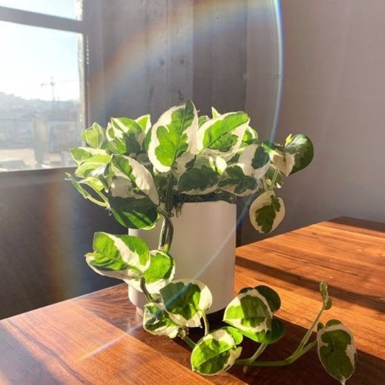
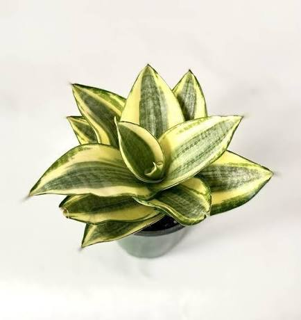
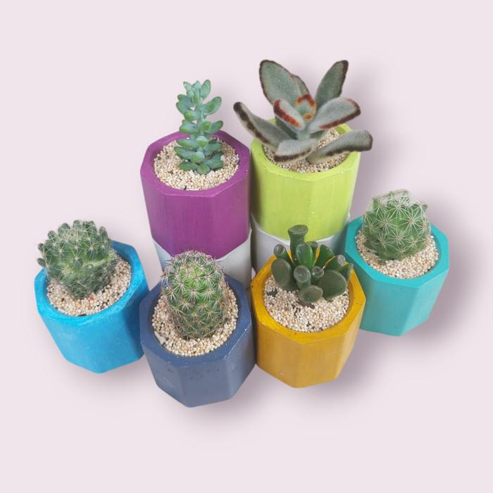
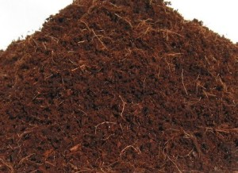
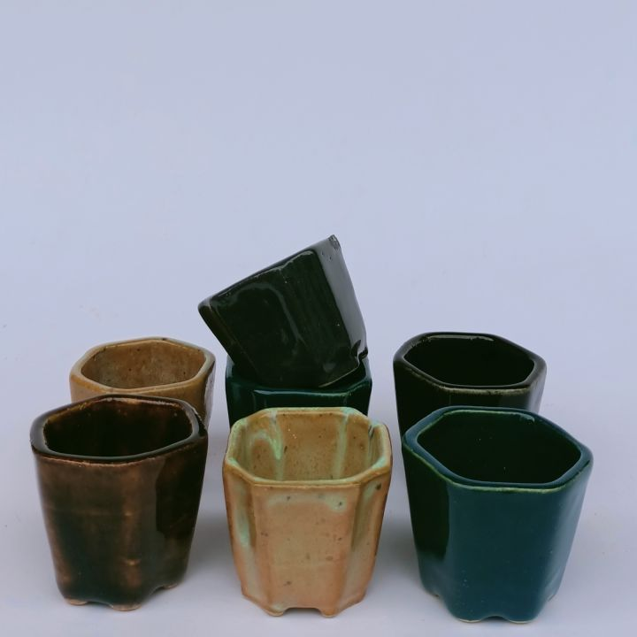
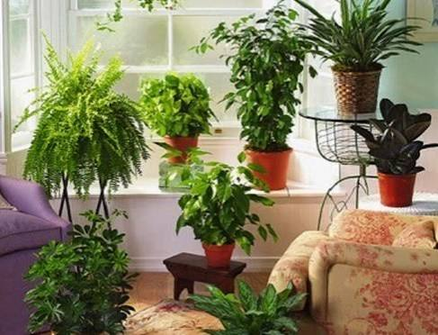

Sirih Gading Mini
Tanaman rambat tahan cahaya rendah, cocok diletakkan di rak buku atau sudut meja kerja.
Rp25.000
Pesan SekarangToko Tanaman Hias Mini & Media Tanam
Hadirkan suasana hijau yang segar dan mudah dirawat di meja kerja maupun sudut kamar Anda dengan koleksi tanaman indoor pilihan.
Pesan & KonsultasiSemua tanaman sudah melalui proses aklimatisasi ruangan dan siap pajang.

Tanaman rambat tahan cahaya rendah, cocok diletakkan di rak buku atau sudut meja kerja.
Rp25.000
Pesan Sekarang
Membantu menyegarkan udara ruangan dan hanya perlu disiram seminggu sekali.
Rp35.000
Pesan Sekarang
Bentuk mungil dan unik, ideal untuk area dekat jendela yang mendapat sinar matahari pagi.
Rp20.000
Pesan Sekarang
Campuran sekam bakar, cocopeat, dan kompos steril (kemasan 1 kg) yang gembur dan tidak berbau.
Rp15.000
Pesan Sekarang
Diameter 8–10 cm lengkap dengan tatakan bawah dan lubang drainase agar akar tidak busuk.
Rp30.000
Pesan Sekarang
Bundling 2 tanaman indoor pilihan, pot terakota, media tanam, serta kartu panduan perawatan.
Rp75.000
Pesan Sekarang
“Tanamannya datang dalam kondisi segar, media tanamnya bersih, dan ukurannya pas banget buat ditaruh di samping monitor kerja.”